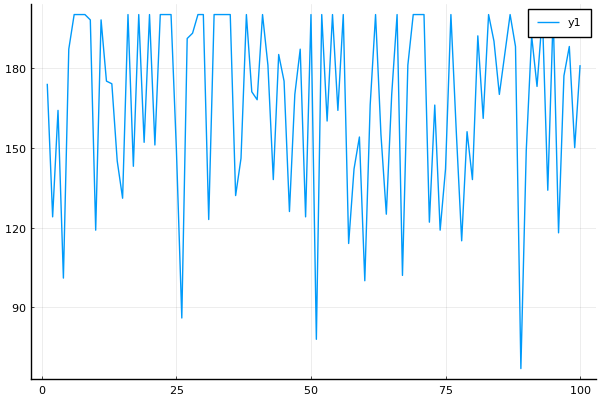

JuliaRL_BC_CartPole


using ReinforcementLearning
using StableRNGs
using Flux
using Flux.Losses
Base.@kwdef struct RecordStateAction <: AbstractHook
records::Any = VectorSATrajectory(; state = Vector{Float32})
end
function (h::RecordStateAction)(::PreActStage, policy, env, action)
push!(h.records; state = copy(state(env)), action = action)
end
function RL.Experiment(
::Val{:JuliaRL},
::Val{:BC},
::Val{:CartPole},
::Nothing;
seed = 123,
save_dir = nothing,
)
rng = StableRNG(seed)
env = CartPoleEnv(; T = Float32, rng = rng)
ns, na = length(state(env)), length(action_space(env))
agent = Agent(
policy = QBasedPolicy(
learner = BasicDQNLearner(
approximator = NeuralNetworkApproximator(
model = Chain(
Dense(ns, 128, relu; init = glorot_uniform(rng)),
Dense(128, 128, relu; init = glorot_uniform(rng)),
Dense(128, na; init = glorot_uniform(rng)),
) |> cpu,
optimizer = ADAM(),
),
batch_size = 32,
min_replay_history = 100,
loss_func = huber_loss,
rng = rng,
),
explorer = EpsilonGreedyExplorer(
kind = :exp,
ϵ_stable = 0.01,
decay_steps = 500,
rng = rng,
),
),
trajectory = CircularArraySARTTrajectory(
capacity = 1000,
state = Vector{Float32} => (ns,),
),
)
stop_condition = StopAfterStep(10_000, is_show_progress=!haskey(ENV, "CI"))
hook = RecordStateAction()
run(agent, env, stop_condition, hook)
bc = BehaviorCloningPolicy(
approximator = NeuralNetworkApproximator(
model = Chain(
Dense(ns, 128, relu; init = glorot_uniform(rng)),
Dense(128, 128, relu; init = glorot_uniform(rng)),
Dense(128, na; init = glorot_uniform(rng)),
) |> cpu,
optimizer = ADAM(),
),
)
s = BatchSampler{(:state, :action)}(32;)
for i in 1:300
_, batch = s(hook.records)
RLBase.update!(bc, batch)
end
hook = TotalRewardPerEpisode()
Experiment(bc, env, StopAfterEpisode(100, is_show_progress=!haskey(ENV, "CI")), hook, "BehaviorCloning <-> CartPole")
endusing Plots
ex = E`JuliaRL_BC_CartPole`
run(ex)
plot(ex.hook.rewards) Total reward per episode
┌────────────────────────────────────────┐
200 │⠀⠀⡏⢹⣧⠀⡇⣿⣿⢹⢠⠎⣿⠉⡇⡇⣧⠀⠀⣸⣿⣸⡇⠀⢸⠀⡇⡎⡇⠀⡇⠀⡄⣇⡸⡄⡄⣿⡇⡀│
│⡀⢸⠀⢸⣿⡀⣷⣿⣿⢸⢸⠀⣿⠀⡇⣇⣿⢸⣀⣿⣿⣿⣇⠀⢸⡀⡇⡇⢣⠀⣿⠀⣷⢻⡇⡇⣿⣿⣷⣧│
│⢇⣼⠀⢸⡇⡇⣿⢿⡿⢸⢸⠀⣿⠀⣿⠈⢻⡇⣿⣿⣿⡿⢿⠀⡇⣷⢻⡇⢸⡄⣿⠀⣿⠘⠃⡇⡏⣿⣿⣿│
│⢸⣿⠀⢸⡇⢣⣿⠸⠇⢸⣸⠀⣿⠀⣿⠀⠀⡇⣿⣿⣿⠁⢸⣰⡇⣿⢸⡇⢸⡇⣿⢰⡇⠀⠀⣇⡇⢿⣿⢸│
│⢸⣿⠀⢸⡇⢸⡟⠀⠀⠀⣿⠀⡟⠀⡿⠀⠀⠇⡿⢻⣿⠀⢸⣿⡇⣿⢸⠃⢸⣧⢻⡿⠇⠀⠀⣿⠀⢸⣿⠀│
│⠸⣿⠀⢸⡇⠈⠁⠀⠀⠀⣿⠀⡇⠀⠁⠀⠀⠀⠇⠸⣿⠀⢸⢹⡇⠸⢸⠀⢸⢹⠀⡇⠀⠀⠀⣿⠀⠀⡇⠀│
│⠀⢹⠀⠀⠁⠀⠀⠀⠀⠀⡿⠀⠀⠀⠀⠀⠀⠀⠀⠀⡿⠀⠘⢸⡇⠀⢸⠀⠀⠈⠀⠃⠀⠀⠀⣿⠀⠀⠁⠀│
Score │⠀⠘⠀⠀⠀⠀⠀⠀⠀⠀⡇⠀⠀⠀⠀⠀⠀⠀⠀⠀⡇⠀⠀⠘⠇⠀⠘⠀⠀⠀⠀⠀⠀⠀⠀⢿⠀⠀⠀⠀│
│⠀⠀⠀⠀⠀⠀⠀⠀⠀⠀⠇⠀⠀⠀⠀⠀⠀⠀⠀⠀⡇⠀⠀⠀⠀⠀⠀⠀⠀⠀⠀⠀⠀⠀⠀⢸⠀⠀⠀⠀│
│⠀⠀⠀⠀⠀⠀⠀⠀⠀⠀⠀⠀⠀⠀⠀⠀⠀⠀⠀⠀⠁⠀⠀⠀⠀⠀⠀⠀⠀⠀⠀⠀⠀⠀⠀⢸⠀⠀⠀⠀│
│⠀⠀⠀⠀⠀⠀⠀⠀⠀⠀⠀⠀⠀⠀⠀⠀⠀⠀⠀⠀⠀⠀⠀⠀⠀⠀⠀⠀⠀⠀⠀⠀⠀⠀⠀⠀⠀⠀⠀⠀│
│⠀⠀⠀⠀⠀⠀⠀⠀⠀⠀⠀⠀⠀⠀⠀⠀⠀⠀⠀⠀⠀⠀⠀⠀⠀⠀⠀⠀⠀⠀⠀⠀⠀⠀⠀⠀⠀⠀⠀⠀│
│⠀⠀⠀⠀⠀⠀⠀⠀⠀⠀⠀⠀⠀⠀⠀⠀⠀⠀⠀⠀⠀⠀⠀⠀⠀⠀⠀⠀⠀⠀⠀⠀⠀⠀⠀⠀⠀⠀⠀⠀│
│⠀⠀⠀⠀⠀⠀⠀⠀⠀⠀⠀⠀⠀⠀⠀⠀⠀⠀⠀⠀⠀⠀⠀⠀⠀⠀⠀⠀⠀⠀⠀⠀⠀⠀⠀⠀⠀⠀⠀⠀│
0 │⠀⠀⠀⠀⠀⠀⠀⠀⠀⠀⠀⠀⠀⠀⠀⠀⠀⠀⠀⠀⠀⠀⠀⠀⠀⠀⠀⠀⠀⠀⠀⠀⠀⠀⠀⠀⠀⠀⠀⠀│
└────────────────────────────────────────┘
0 100
Episode
This page was generated using DemoCards.jl and Literate.jl.